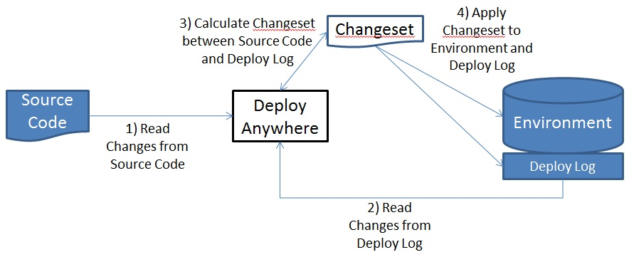
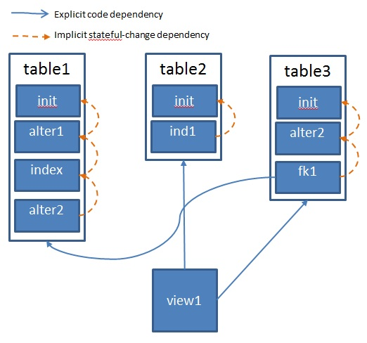

Design Walkthrough
InfoQ Article
Note: we have published an article on InfoQ that gives an overview of Obevo and some technical details.
The InfoQ article has a slightly more up-to-date and cleaner representation of some of the information on this page. Feel free to look at the InfoQ article first before proceeding on this page.
Obevo Problem Statement - A Compiler for Stateful and Stateless Code Classes
Design goal of Obevo - to give idempotent deploy semantics onto a platform target that does not have it by default, the keys problem to solve being:
- There is no existing mechanism to take a full binary of code and deploy it to upgrade an environment
- Some objects within the environment are stateful, thus requiring incremental commands to modify them (and making #1 difficult)
- There is no default ordering mechanism for object changes to the environment; must be manually defined by users.
Databases happen to hit all 3 points, notably for applying SQL DDL changes to DB schemas, per the overview
- #1: There is no mechanism currently defined by DBMS providers to define a full schema definition in source code and apply the results to a database that can work both against a blank and existing db
- #2a: Table modifications cannot be expressed by simply presenting a full view of the object definition. Instead, one must provide an incremental modification statement to alter the table, and changes should only be applied once, lest an exception is hit or data applied in duplicate.
- #2b: At the same time, other DB objects are stateless (unlike tables), where one can simply drop and add objects to recreate them. Such objects like stored procedures and views share semantics more similar to application code.
- #3:When deploying a full database, order must be considered to deploy dependency objects before the ones depending on them (e.g. deploying a table before the view that depends on it.
Noting point #2, each object type (stateful vs. stateless) have different ways to maintain them, and a tool should ideally be able to handle them both. This is the premise and value-add of Obevo.
Boiling down the core problem and design - it actually does not involve SQL or DB constructs at all. Instead, it is about managing code files in the stateless and stateful manners and applying changes to them to the target environment. The end result is a “mini-compiler” of sorts; hence, the title of this section.
This page details the generic pattern here on compiling stateful and stateless code for an underlying system that only accepts incremental changes. As of today, the implementations have been around RDBMS, but we’ve already started to venture into NoSQL where not all operations need SQL (Hive), and depending on the creative minds out there, we can apply this to more.
So yes, this is a solution looking for a problem :) - but an interesting problem it is!
Problem Terminology
Let’s lay out the main actor involved in a System, at least with regards to this problem statement:
| Actor |
Role Description Equivalent for a database setup |
Equivalent for an application setup (Java) |
| Developers |
The folks building the System Developers |
Developers |
| Source Code |
The code that Developers write that is eventually built, shipped, and run to provide functionality to a user. But first, it must be put into a form that can be run... DDLs, SQL scripts, etc. |
Java classes |
| Artifact / Binary |
The result of building the source code into something that can be run. zip archive containing the SQL scripts to deploy |
Java Jar |
| Environment |
An instance of a running System (i.e. where the end result of a Source Code build is run). A system can have many Environments, from dev to uat to production. A database / set of databases on some known schemas |
A host with a container to execute Java processes |
| Deploy Tool |
The mechanism that applies a built binary to an Environment A SQL command-line interface, or a deploy tool like Obevo |
General install scripts, FTP, whatever your firm uses |
| Deploy Team |
The individuals that carry out the deployment (i.e. invoke whatever commands or UIs to carry out the deployment using the tool Team member/s assigned to this role |
Team member/s assigned to this role |
Requirements for Stateful objects / run-once statements
For any given deployment activity, a set of statements need to be applied to a target environment.
As mentioned earlier, statements on stateful objects must only be run once, and the state of an environment over time is the accumulation of such statements applied to it.
e.g.
- Binary Version 1 - apply statements 1, 2, 3
- Binary Version 2 - apply statements 4, 5
- Binary Version 3 - apply statements 6, 7, 8
We present two ways to do this:
- The Deploy Team notes which statement/s from the Source Code need to be applied for that migration
- The Deploy Tool takes the full set of statements from the Source Code and figures out which ones need to be applied to the environment
Option 1 was the way teams did this without automation. Tooling-wise, it is quite simple; but it is a riskier endeavor as it leaves more responsibility on a human operator.
Option 2 is what most database deployment tools do. We detail that now.
Deployment Algorithm
Diagram

Developer Guide note:
- Algorithm in this diagram is implemented in com.gs.obevo.impl.MainDeployer
- Deploy Log in the diagram maps to com.gs.obevo.api.platform.ChangeAuditDao
- Enviroment in the diagram maps to com.gs.obevo.api.appdata.Environment
- Changeset in the diagram maps to com.gs.obevo.impl.Changeset
- Step 1) to read Source Code changes is done in com.gs.obevo.impl.SourceChangeReader
Recapping the steps in the diagram:
- Read Changes in Source Code
- Read Changes from Deploy Log
- Calculate ChangeSet between Source Code and Deploy Log
- Apply Changeset to Environment and Deploy Log
Details on some of these steps:
ChangeKey to match Source Code and Deploy Log
Step 3 is to calculate the ChangeSet between the Source Code and Deploy Log. This implies some kind of key that can identify a Change to facilitate this match. The choice of type to use (e.g. number, string) does not matter.
The ChangeKey will be stored in the Deploy Log when applying the change so that it can be used later.
Stateful Changes: No modifying or deleting already deployed changes allowed
As mentioned earlier, statements on stateful objects must only be run once, and the state of an environment over time is the accumulation of such statements applied to it. (yes, we mention this fact again - it plays a key role!)
That means we cannot modify a Change entry in the Source Code once it is deployed, as otherwise the deploy tool will not know how to apply the difference. The modification must either be to add a new Change or to rollback/delete the change per the specifications of the tool (if supported).
To guard against such user actions, a hash of the Change text is stored in the Deploy Log. Upon subsequent releases, a hash is taken of the Change in Source Code to compare against the hash from the Deploy Log. (a hash is taken instead of storing the full text for space efficiency).
To summarize the hash difference behavior for Stateful Changes:
| Hash Comparison |
Action |
| Hashes match in Source Code and Deploy Log |
No action |
| Hashes value in Source Code, but not Deploy Log |
Deploy Change |
| Hashes value in Deploy Log, but not Source Code |
Exception - Source Code Change was removed improperly |
| Hashes differ between Source Code and Deploy Log |
Exception - Source Code Change was changed improperly |
The following tables demonstrate an example:
| Changeset Input |
Changeset Result |
Deploy Result |
| Deploy #1 - new environment |
| Source Code |
|
Deploy Log |
| ChangeKey |
Hash |
|
ChangeKey |
Hash |
| change1 |
abc |
|
|
|
| change2 |
123 |
|
|
|
|
change1 and change2 to be deployed |
| Deploy Log |
| ChangeKey |
Hash |
| change1 |
abc |
| change2 |
123 |
|
| Deploy #2 - new release on environment |
| Source Code |
|
Deploy Log |
| ChangeKey |
Hash |
|
ChangeKey |
Hash |
| change1 |
abc |
|
change1 |
abc |
| change2 |
123 |
|
change2 |
123 |
| mynewChange3 |
qwerty |
|
|
|
| otherChange4 |
uiop |
|
|
|
|
change1 and change2 to be deployed |
| Deploy Log |
| ChangeKey |
Hash |
| change1 |
abc |
| change2 |
123 |
| mynewChange3 |
qwerty |
| otherChange4 |
uiop |
|
| Deploy #3 - bad change; failure |
| Source Code |
|
Deploy Log |
| ChangeKey |
Hash |
|
ChangeKey |
Hash |
| change1 |
abc |
|
change1 |
abc |
| change2 |
123 |
|
change2 |
123 |
| mynewChange3 |
qwertyChanged
|
|
mynewChange3 |
qwerty |
otherChange4
|
uiop
|
|
otherChange4 |
uiop |
|
Failed validation: mynewChange3 hash changed, otherChange4 was removed |
No changes applied |
Stateless Changes: Modifying or deleting already deployed changes IS allowed
What about Stateless Changes?
- The hash calculation logic remains the same as for Stateful Changes
- Only the behavior on hash differences changes. Stateless Changes can be rerun (or dropped and added), so we have more flexibility here.
To summarize the hash difference behavior for Stateful Changes:
| Hash Comparison |
Action |
| Hashes match in Source Code and Deploy Log |
No action |
| Hashes value in Source Code, but not Deploy Log |
Deploy Change |
| Hashes value in Deploy Log, but not Source Code |
Remove Change |
| Hashes differ between Source Code and Deploy Log |
Re-deploy Change (drop/add if necessary) |
Source Code Format
We have the algorithm in abstract now - the question becomes: how best to represent the Changes in source code?
We present 2 alternatives - the first is what most DB tools support that works best with stateful objects, and the second is what Obevo uses to work with both stateful and stateless changes.
|
Methodology Name
|
File per migration (used by most other tools)
|
File per DB object (used by Obevo)
|
|
Description
|
- Most closely ties to how teams would do deployments manually
- Each file has the set of changes intended for the upcoming migration.
- Each file may span multiple database objects, and we can have multiple files for a migration.
Example:
- Original creation statements in version 1 (V1). Subsequent versions have followup updates
- The
ChangeKey
here is the file name that includes the version number
|
- Code/Changes for each class/object are kept in their own dedicated files/set of files
- An object requiring stateful changes can have many Changes defined in its file
- An object requiring stateless changes would only have one Change defined, which would be re-deployed for each change.
- This ties closely to how object-oriented languages maintain their code, e.g. Java having one-file-per-class
Example:
- The
ChangeIdentity
is the file name + "//// CHANGE" name for the subsection in the file (if applicable).
- Note the stateless objects do not have "//// CHANGE" to denote multiple changes
|
| Example:
|
|
File Names
|
Content
|
| V1_baseline.sql |
CREATE TABLE table1 (...)
CREATE TABLE table2 (...)
CREATE TABLE table3 (...)
CREATE VIEW view1 SELECT * FROM table2 inner join table3 ... where colA=1
|
| V2_table1ColAdd.sql |
ALTER TABLE table1 ADD COLUMN colY
ALTER TABLE table1 ADD COLUMN colZ
|
| V2_addIndexes.sql |
CREATE INDEX t1ind1 ON table1 (...)
CREATE INDEX t1ind2 ON table1 (...)
CREATE INDEX t2ind1 ON table2 (...)
|
| V3_repTableColAdds.sql |
ALTER TABLE table1 ADD COLUMN colB
ALTER TABLE table3 ADD COLUMN colB
|
| V4_fkAdds.sql |
ALTER TABLE table3 ADD FOREIGN KEY ON (colB) REFERENCES table1 (colB) |
| V4_viewFix1.sql |
DROP VIEW view1
CREATE VIEW view1 SELECT * FROM table2 inner join table3 ... where colA=2
|
| V5_viewFix2.sql |
DROP VIEW view1
CREATE VIEW view1 SELECT * FROM table2 inner join table3 ... where colA=3
|
|
|
File Names
|
Content
|
| table1.sql |
//// CHANGE name=init
CREATE TABLE table1 (...)
//// CHANGE name=alter1
ALTER TABLE table1 ADD COLUMN colY
ALTER TABLE table1 ADD COLUMN colZ
//// CHANGE name=index
CREATE INDEX t1ind1 ON table1 (...)
CREATE INDEX t1ind2 ON table1 (...)
//// CHANGE name=alter2
ALTER TABLE table1 ADD COLUMN colB
|
| table2.sql |
//// CHANGE name=init
CREATE TABLE table2 (...)
//// CHANGE name=ind1
CREATE INDEX t2ind1 ON table2 (...)
|
| table3.sql |
//// CHANGE name=init
CREATE TABLE table3 (...)
//// CHANGE name=alter2
ALTER TABLE table3 ADD COLUMN colB
//// CHANGE name=fk1
ALTER TABLE table3 ADD FOREIGN KEYON (colB) REFERENCES table1 (colB)
|
| view1.sql |
CREATE VIEW view1 SELECT * FROM table2 inner join table3 ... where colA=1 (edited on change 2)
CREATE VIEW view1 SELECT * FROM table2 inner join table3 ... where colA=2 (edited on change 3)
CREATE VIEW view1 SELECT * FROM table2 inner join table3 ... where colA=3
|
|
|
Pros
|
- Easy to adopt to initially as this is similar to the way teams would manually deploy db changes
- Similar changes across multiple tables can easily be done in one file (see the V2_addIndexes.sql example; such a use case is useful say if you forgot to apply a particular attribute to a db object)
- Easy to see which changes go into a particular version directly from the file system
|
- Easier to understand the DB structure just from the file structure, as the two match (much like Java classes)
- File count will not grow significantly larger than the # of DB objects
- Editing stateless objects in place (following a model similar to that of Java code) is now possible
- More conducive to supporting the Level 7 maturity level (see below for more information)
- Re-baselining the SQLs will not lead to an excessively large single file, as we would have with the migration-based model.
- In addition, re-baselining can be done on a per-table basis, instead of having to do it for the whole schema. This may be useful in case some tables are still actively developed in consecutive versions and others are not
|
|
Cons
|
- Can lead to a cluttered and growing file system
- As each migration is contained in a file, the number of files would continue to grow endlessly over time
- The toy example above only involves 4 database objects over 5 releases, and we have 7 files. Imagine how much more that will grow with the number of tables and versions that get added
- Harder to baseline, and leads to a less-desirable baseline file
- Baselining the DDLs would help avoid a cluttered file system
- However, that file itself would end up being very large, as it would contain all the database objects in the schema (you can see already how V1_baseline.sql is larger than the other tables).
- Such a file structure would not be as readable (certainly, we don't look to define all our Java classes in a single file)
- Very unfriendly approach to use for stateless objects
- Note the view1 example. We change the view 3 times (specifically the where clause), and even though it is a stateless objects, the "migration" methodology of the DB deployment tool forces us to duplicate the text across each file. Certainly it would be nice to edit this in place, similar to a Java class
- This is less conducive to supporting the Level 7 Maturity Level mentioned below
|
- Bulk changes to the schema could require changes to multiple files (e.g. note how the single V2_addIndexes.sql change in the migration-based model is now represented in two files)
- However, note that the same consideration would apply for Java classes files regardless
- In addition, some concerns on applying bulk changes like permissions is mollified by the support that Obevo has to define grants in a central config file (i.e. no need to write grant statements for each table)
- Cannot see in one file the changes that would be done for a particular version
- However, note that the diffs across versions can still be viewed by comparing tags, similar to how you would do this for Java classes. (notice a pattern here in how we can maintain DB objects more like code?)
|
Sorting Changes in the file-per-object format
The file-per-object format that Obevo chose has many benefits, but it adds some complexity in the tool’s implementation, namely: how to define the order of the changes?
With the file-per-migration format, it is simpler to just order by the files; but the file-per-object format would likely require some ordering constraints across changes. In this section, we discuss how this is handled.
[Developer Guide note - this section is implemented in com.gs.obevo.impl.graph.GraphEnricher]
Let’s look at the source code example above, redrawn as a graph:
- Each filled box represents a Change
- The stateful table* files consist of many changes, and the stateless view* file only has a single change.
- The arrows represent order dependencies among the changes, notably:
- view1 depends on table2 and table3 per the SQL definition (an explicit code dependency)
- table3’s foreign key depends on table1 to be created (an explicit code dependency)
- The Changes listed within a stateful object must be done in order (an implicit dependency based on the order in the file)
- Note that changes not related via arrows (whether directly or transitively) don’t have any dependency order, e.g. table1.init and table2.init can be executed in any order.

Given that graph, an acceptable deployment order can be obtained usingtopological sort. Please read the link for more information.
[Developer Guide note - the topological sorting is implemented (with the help ofJGraphT) in com.gs.obevo.impl.graph.GraphSorter]
For the example above, we have a number of acceptable topological sorts:
- table1.init, table1.alter1, table1.index, table1.alter2, table3.init, table3.alter2, table3.fk1, table2.init, table2.ind1, view1
- table2.init, table2.ind1, table3.init, table3.alter2, table1.init, table1.alter1, table1.index, table1.alter2, table3.fk1, view1
For easier supportability by clients, we will tune the topological sorting algorithm to give a consistent sorting.
Defining and discovering dependencies in Source Code
One detail left for this algorithm - how is the dependency graph created from the source code? Specifically the explicit code dependencies, which require some sort of parsing of the code. Parsing code is not a trivial problem; to do it correctly, we would need ASTs for the coding language of the text, and that may not be easily avaiable or easy to implement.
Part 1: The simplest methology is to avoid parsing entirely by defining a metadata attribute on each Change for the dependencies. This would technically work, however it will not scale well for developers if there are hundreds (or thousands) of code files to maintain. But this method will still prove useful; we will com back to this.
Part 2: We can discover the dependencies in text using a rudimentary technique:
- We have the object names (based on the directory structure) and the text of the code
- For each Change, search for references to those object names. Whichever object names are found in the text are counted as dependencies.
[Developer Guide note - this technique is implemented in com.gs.obevo.impl.text.TextDependencyExtractor]
From the example above:
- The object name list is: table1, table2, table3, view1
- The text for view1 is as follows, with the obect names in red and italicized
| CREATE VIEW
view1
SELECT * FROM
table2
inner join
table3
... where colA=3
|
- Excluding the object’s own name (view1), we find that table2 and table3 are dependencies.
Part 3: What if our rudimentary technique doesn’t work? We may find false positives or false negatives.
In this case, fall back to the metadata tag option mentioned in part 1. We either let clients:
- Override the programmatic calculation by defining their list
- Supplement the programmatic calculation by specifying dependencies to add (fixing the false negatives)
- Supplement the programmatic calculation by specifying dependencies to remove (fixing the false positives)
Putting it together - integrating DB Deployments and Other Platforms
Thus far, we have not had any specific DB or SQL imprints in the algorithms (The text parsing algorithm could work with any language).
The points where DB-specific (or any other platform-specific) log would go are:
- “Apply Changeset to Platform” - this point in the algorithm takes the Change as input; how to actually apply the change is platform-specific
- Deploy Log implementation - this should ideally co-exist w/ the environment (e.g. a table in the DB for DB platforms), but that is not an absolute requirement.
- “Read Changes from Source Code” - the structure to impose for a platform on users can be defined as an implementation desires.
- “Calculate Changeset” and Discovering Dependencies - there are a few minor details for each platform implementation to fill in (e.g. handling case-sensitivity)
[Developer Guide note - com.gs.obevo.api.platform.Platform and com.gs.obevo.api.platform.ChangeType classes are the key interfaces to implement to customize the behavior for each platform.]